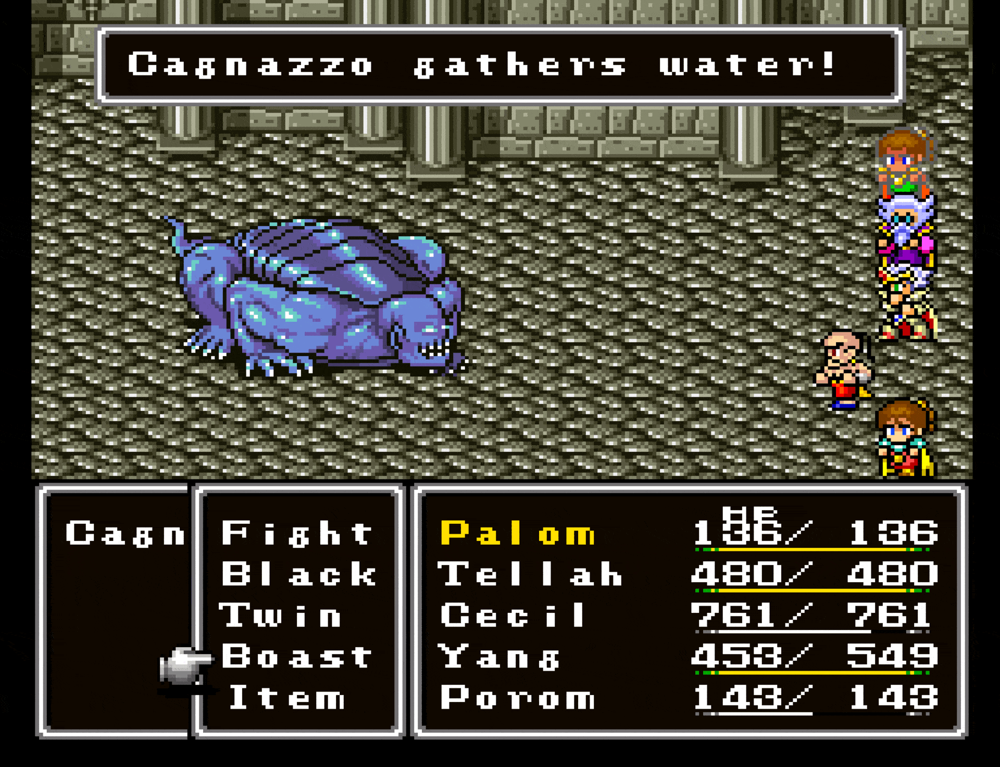
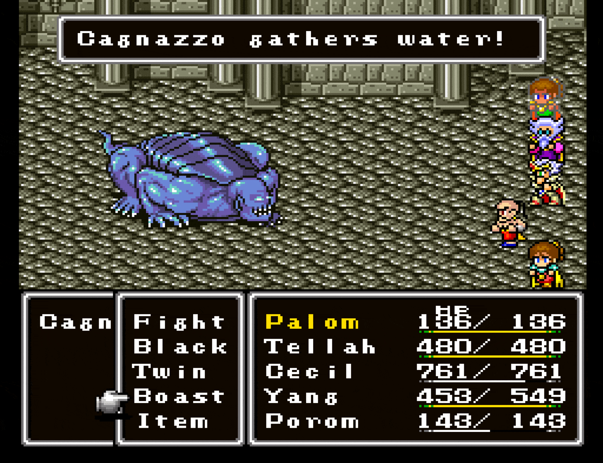
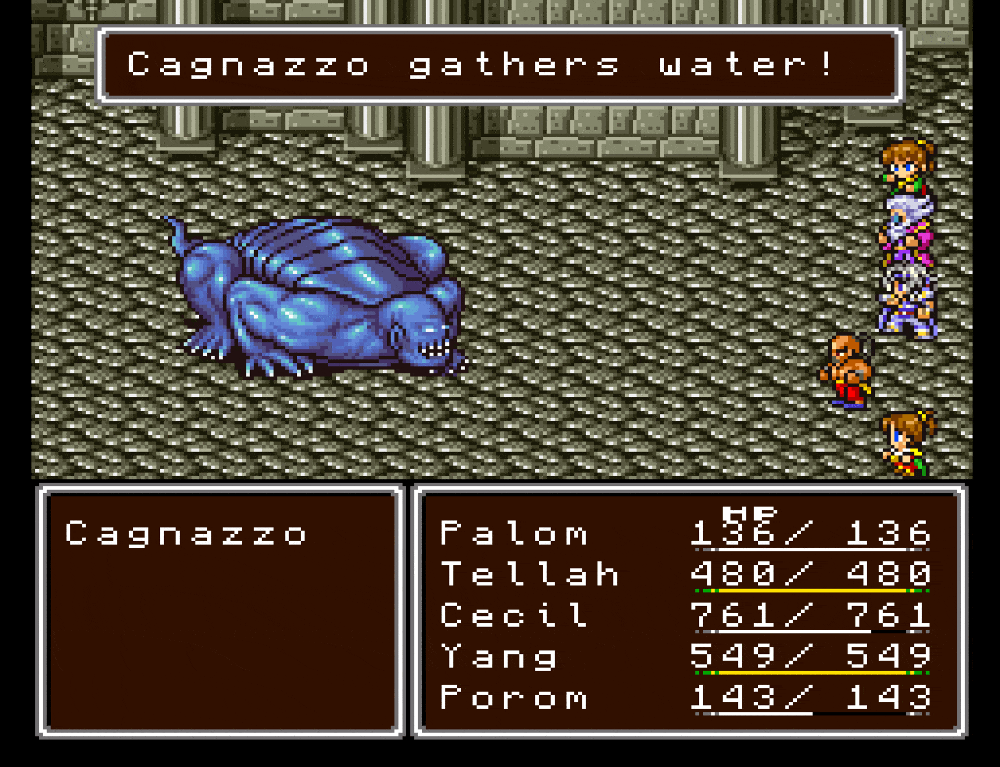
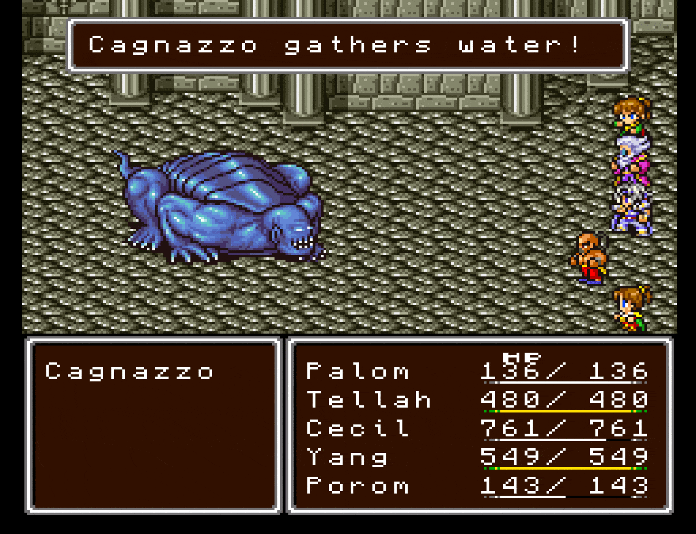
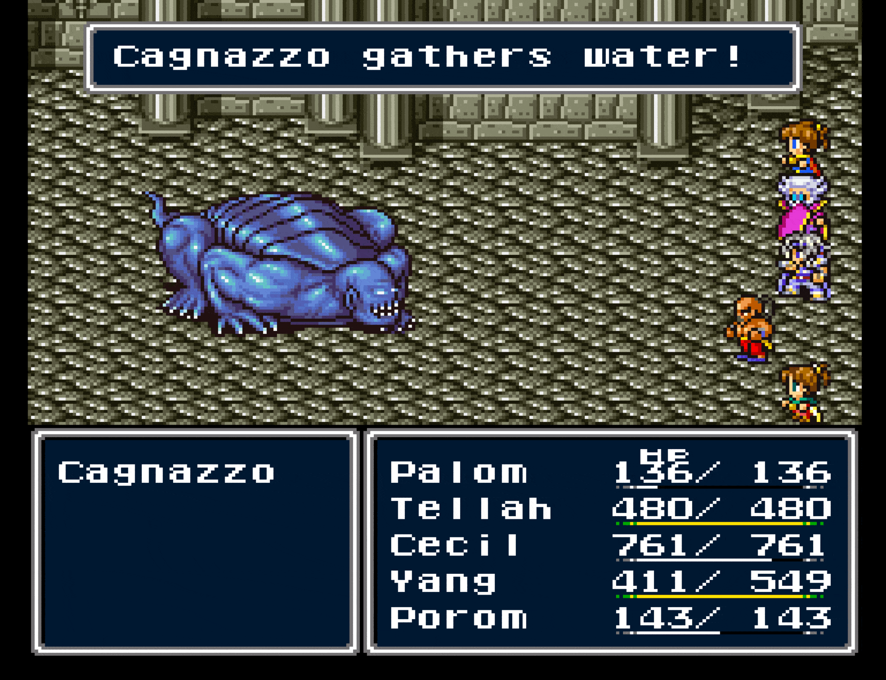
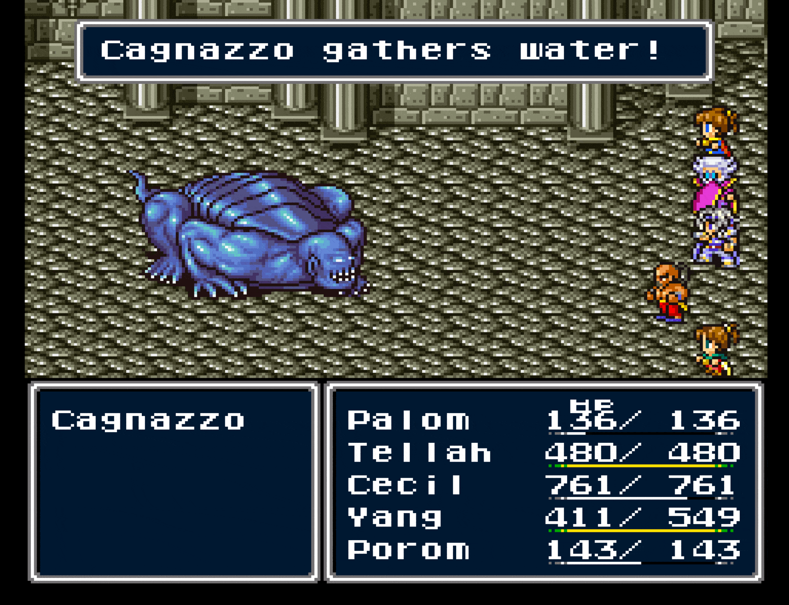

Please upload a copy of 'Final Fantasy 4 Ultima Plus. This app provides alternate graphics and font styles: Choose from one of 10 after uploading. (Download the full patch archive for custom fonts.)
This site & patches updated 31 Jan 2025
2b2e2635


 


 


 


 Powered by Rom Patcher JS
Powered by Rom Patcher JS